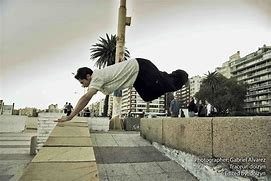
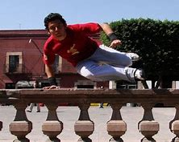
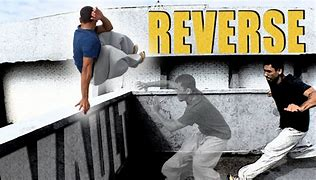
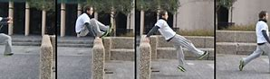

El gato, tambien llamado monkey o kong es un salto en el que franquearemos un obstáculo apoyándonos en él con las manos en paralelo durante el salto, para después pasar las piernas juntas y flexionadas entre el hueco que dejan los brazos en su apoyo en el obstáculo.
PASAVALLAS

Movimiento fundamental en el que intentaremos sobrepasar el obstáculo de la forma más rápida y fluida posible apoyando una sola mano; este movimiento nos servirá como enlace de la carrera cuando nos encontremos una valla o elemento similar en nuestro recorrido.
REVERSO

El Reverso es un movimiento en el que se pasará un obstáculo con las dos manos dando un giro. La forma correcta de realizarlo es con las dos manos mirando hacia ti pero hay gente que las pone una hacia ti y otra hacia delante.
ROMPEMUÑECAS

1:Primero se intenta saltar un muro sin tocarlo
2:Ahora se saltará encogiendo lo máximo posible las piernas
3:Si ves que le tienes miedo al muro, intentalo en uno mas bajo
4:Al realizar con éxito el paso 2, se volverá a intentar, pero tocando un poco el muro.
5:Se debe intentar realizar el paso 4 cada vez apoyandose más con las manos e intentando impulsarse
6:Por último queda perfeccionarlo, hazlo el mayor número posible de veces y cada vez en muros mas altos y anchos.